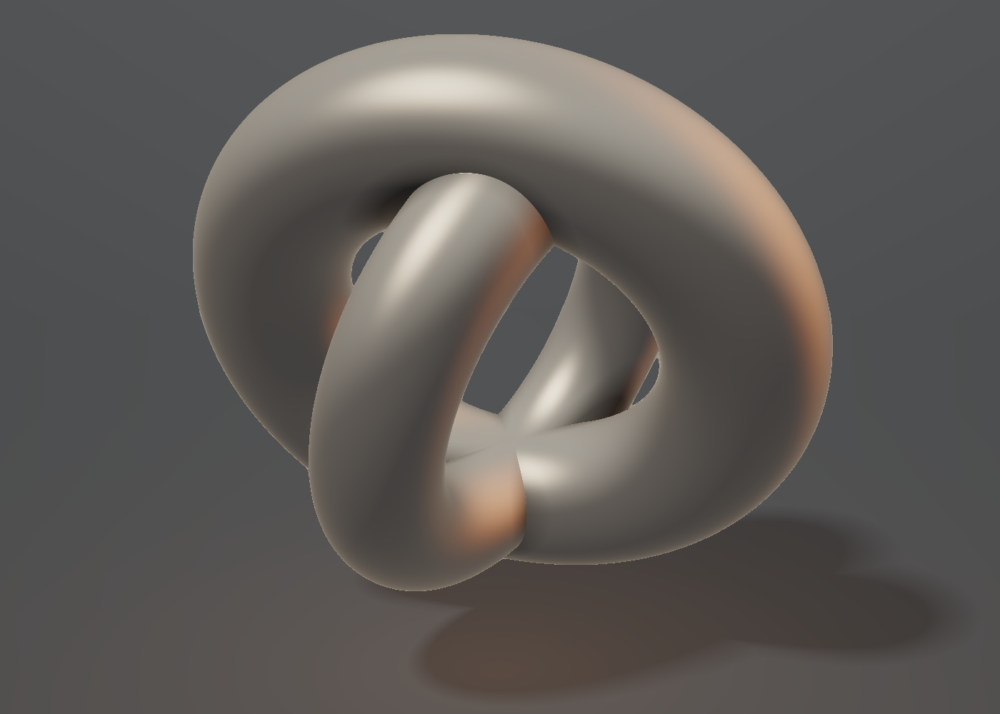

Find the feeling.
References, conversations and a clear creative direction.

NOAH VALE — INDEPENDENT 3D ARTIST
I shape curious ideas into tactile worlds.
A little strange. Always intentional.
A FEW THINGS I’VE BROUGHT INTO EXISTENCE
From a spark of an idea
to the very last pixel.
Showing all 6 projects
That’s where the interesting stuff happens.
✳A LITTLE ABOUT THE HUMAN BEHIND THE RENDERS
I’m Noah, an independent 3D artist and motion designer exploring the space between the familiar and the impossible. I turn simple forms into stories you can almost reach out and touch.
My process moves from messy sketches to geometry, then materials, lighting and a lot of patient iteration. Currently exploring procedural worlds and real-time storytelling.
Blender · Cinema 4D · Maya
Houdini · Redshift · After Effects
RTX 4090 · Ryzen 9
128 GB RAM · Too much coffee
Fictional artist profile and studio toolkit. All artwork on this site is original procedural WebGL, not a claim of production work in the tools above.
Freelance, full-time & creative collaborations ↗FROM NOTHING TO SOMETHING
References, conversations and a clear creative direction.
Shape, material and light. Test. Break. Find something unexpected.
Iterate with intention, then deliver the final frame.
COMMISSION STATUS: OPEN
Tell me what you’re imagining.
Let’s find out what it could become.